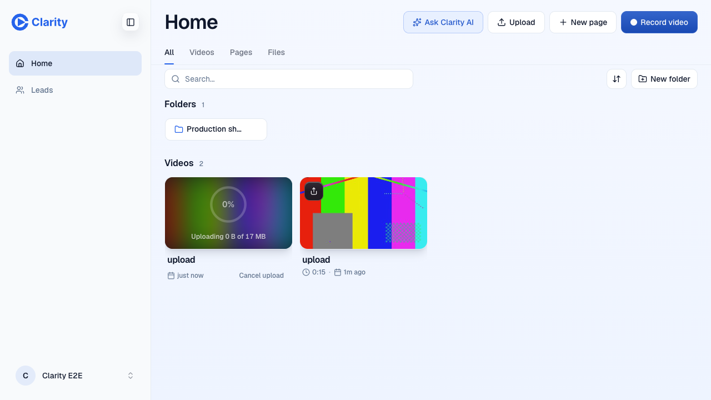
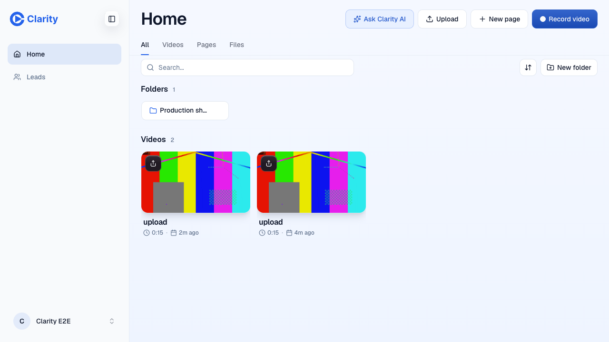

Verified preview head ec93df687951d7a618e1d88f54c84086e65fecef. Synthetic media and a seeded test account only.
A 64 MiB regression fails without a chunk deadline and passes with it. A pending Mux PUT now aborts after 120 seconds and retries the same byte range. The browser heartbeat continues. This establishes a transport hang, not a browser-wide freeze.
The second PUT of a real 18,027,323-byte MP4 was deliberately held pending. Browser timers had not advanced to the next progress tick, so the card shows 0 B despite the first acknowledged chunk.

After advancing the deadline, the sender retried bytes 524288-1048575/*, completed all bytes, and received a ready Library node. Reload showed its test-pattern poster and 15-second duration. A fresh independent reviewer repeated this flow and read the exact node afterward. No page errors occurred.

103 related tests, scoped lint, editor typecheck and security scan passed. Broad local smoke had intermittent network failures. CI and preview deploy checks passed at this head. Grant and finish deadlines remain outside this fix. Healthy chunks taking over two minutes may retry.